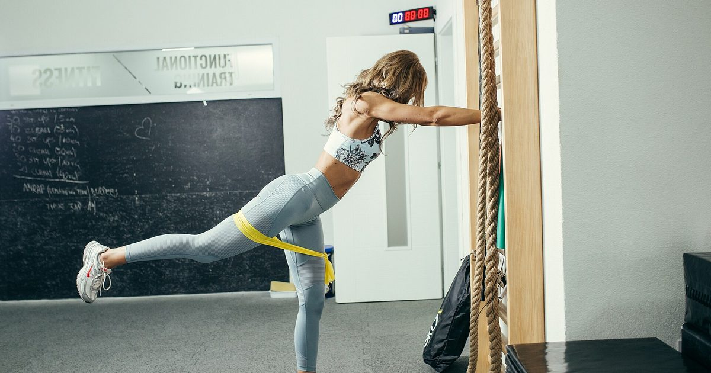

Minimal Gear
Resistance Band Full-Body Workout (20 Minutes)
One set of bands covers every movement pattern including the ones bodyweight training cannot reach. Here is the session, and the anchoring detail most guides skip.

Resistance bands are the highest-value purchase in home training, for one reason: they solve the pulling problem. Pushing, squatting, hinging and bracing all work with nothing at all; pulling requires resistance, and a band supplies it for very little money and almost no storage.
This is a complete twenty-minute session using one long band or a set of tube bands with handles.
Why bands are worth owning
Beyond the pulling problem, three practical advantages.
They store on a hook. In a small flat this matters more than it sounds — see how to store home gym equipment.
They travel. A band weighs almost nothing and turns a hotel room into a usable gym, which is the argument in the travel workout routine.
They load movements bodyweight cannot. Overhead pressing, lateral raises, face pulls, direct biceps work — all awkward or impossible with bodyweight alone.
Anchoring safely
The part most guides skip, and the part where things go wrong.
Door anchor, hinge side. Most bands come with a soft door anchor that threads through and sits against the far side of a closed door. Use the hinge side, not the handle side, and pull away from the door so the tension pushes it closed rather than open. Lock the door if you can. A band released against a face is a genuine injury.
Under a foot. Stand on the middle of the band. Simple and safe, provided you stand on it squarely rather than on an edge where it can slip out.
Around a solid fixed object. A radiator pipe, a stair newel post, a heavy table leg. Test it takes the load before using it.
Bands fail suddenly and store a lot of energy. Inspect for nicks, cracks or thin spots before each session and replace at the first sign of wear. Never stretch a band beyond about two and a half times its resting length. Never anchor to something that can move. And never position your face in the line of the band under tension — the recoil from a snapped band causes eye injuries.
The 20-minute session
Two minutes warming up. Then three rounds of six exercises, resting sixty seconds between rounds. Rest thirty seconds between exercises.
Band squat — 12–20
Stand on the band, handles at shoulder height, squat. The tension increases as you stand, which suits the strength curve well.
Band row — 12–15
Anchored at chest height. Drive the elbows back past the ribs and squeeze the shoulder blades. The most important exercise here — see rows at home for why.
Band chest press — 12–15
Anchored behind you at chest height, press forward. Complements push-ups by loading the end range differently.
Band Romanian deadlift — 12–15
Stand on the band, hinge at the hips with a flat back, return by driving the hips forward. The hinge pattern most home routines omit.
Band overhead press — 10–15
Stand on the band, press overhead. Bodyweight cannot load this pattern well, which makes it one of the strongest arguments for owning bands. Kneel if your ceiling is low — see low-ceiling workouts.
Band pull-apart — 15–25
Arms out in front, pull the band apart squeezing the shoulder blades. Trains the rear deltoids, which almost every home routine neglects — see the bodyweight shoulder workout.
Understanding band tension
Bands behave differently from weights, and understanding how changes what you expect from them.
A weight provides constant resistance throughout a movement. A band provides resistance proportional to how far it is stretched, so the exercise is easiest at the start and hardest at the end.
Sometimes that matches the movement well — in a squat or a press you are strongest near lockout, so increasing tension there is convenient. Sometimes it does not: in a row, you are weakest at full stretch, which is exactly where the band is lightest, so the hardest part of the movement is under-loaded.
The practical response is to pause at the point of peak tension for a second on every repetition, which forces the muscle to work where the band is heaviest rather than bouncing through it.
Rep ranges and effort
Twelve to twenty for most exercises, and fifteen to twenty-five for the small rear-deltoid work. Band resistance is generally light, and evidence comparing light and heavy loads found comparable hypertrophy when sets were taken close to failure.1 The condition is the important part: light bands taken to a comfortable stopping point train very little.
Take the last set of each exercise to within one or two repetitions of failure. Weekly volume drives adaptation up to a point,2 so two or three sessions a week of this is a reasonable dose.
Progressing with bands
Four levers, in order of usefulness:
Shorten the band. Stand wider on it, or take up slack in your grip. This increases tension throughout and is the most precise adjustment available.
Move to a heavier band. Which is why buying a set rather than a single band matters — the types are compared in loop bands vs tube bands.
Double the band. Loop it to halve its working length, roughly doubling the tension.
Slow down and pause. A three-second lowering phase with a one-second pause at peak tension makes any band exercise substantially harder at no cost.
Where bands fall short
Two honest limitations.
Heavy lower-body work. Legs are strong, and even a heavy band is a modest load for a squat. Single-leg bodyweight work loads the legs better than bands do — see training legs at home without equipment.
They wear out. Latex degrades with UV, heat and use. Bands are consumable rather than permanent, and a band that has been in a sunny window for a year is a band that may fail.
Neither undermines the case. For pulling, pressing and the small accessory work that bodyweight cannot reach, a set of bands is the most useful thing you can own — the full argument for buying order is in the minimalist home gym guide.
Where to go next
For band types, strengths and buying advice, see the complete resistance bands guide. To combine bands with bodyweight work in a structured week, use the three-day split.
Frequently asked questions
Can you get a full workout with resistance bands?
Yes. Bands cover all five movement patterns and additionally load overhead pressing, lateral raises and face pulls, which bodyweight training struggles to reach. Their weakest area is heavy lower-body work.
Where should I anchor a resistance band in a door?
The hinge side, with the door closed and locked if possible, pulling in the direction that pushes the door shut rather than open. Never anchor on the handle side and pull the door open toward you.
How many reps should I do with resistance bands?
Twelve to twenty for most exercises and fifteen to twenty-five for small rear-deltoid work. Band resistance is light, so the sets need to be taken close to failure to produce adaptation.
How do I make resistance band exercises harder?
Shorten the working length by standing wider on the band or taking up slack, move to a heavier band, double the band to halve its length, or slow the movement and pause at the point of peak tension.
Are resistance bands as good as weights?
For pulling, pressing and accessory work, they are genuinely comparable. For heavy lower-body training they are not, because legs are strong relative to what even a heavy band provides.
How long do resistance bands last?
They are consumable rather than permanent. Latex degrades with UV, heat and use, so inspect for nicks, cracks and thin spots before each session and replace at the first sign of wear.
Sources and further reading
- Schoenfeld BJ, Grgic J, Ogborn D, Krieger JW. “Strength and Hypertrophy Adaptations Between Low- vs. High-Load Resistance Training: A Systematic Review and Meta-analysis.” Journal of Strength and Conditioning Research, 2017;31(12):3508–3523. PubMed.
- Schoenfeld BJ, Ogborn D, Krieger JW. “Dose-response relationship between weekly resistance training volume and increases in muscle mass: A systematic review and meta-analysis.” Journal of Sports Sciences, 2017;35(11):1073–1082. PubMed.
- NHS. Strength and Flex exercise plan.
- World Health Organization. WHO Guidelines on Physical Activity and Sedentary Behaviour. 2020.
Comments
Comments are not enabled yet. Add a hosted comment embed (Disqus, Commento, Giscus) inside this container when you are ready.